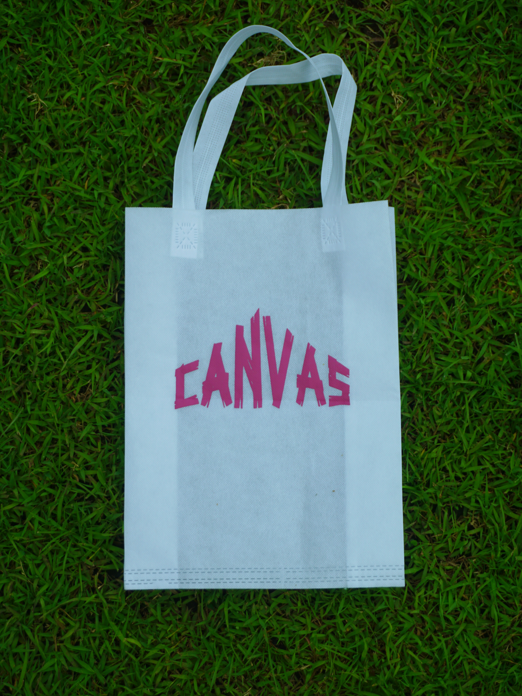

Pilih Totebag Sesuai Gaya Anda

Totebag Canvas
Terbuat dari bahan canvas berkualitas tinggi, totebag ini sangat kokoh, tahan lama, dan memiliki tekstur premium. Ideal untuk penggunaan sehari-hari yang stylish dan ramah lingkungan.
Pelajari Lebih Lanjut

Totebag Spunbond
Ringan dan ekonomis, totebag spunbond adalah pilihan sempurna untuk acara promosi, belanja, atau sebagai alternatif kantong plastik yang ramah lingkungan.
Pelajari Lebih Lanjut